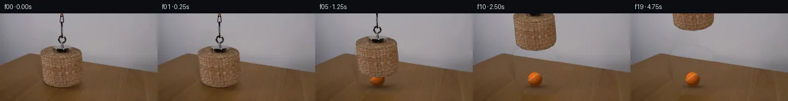

![首帧]()

Round 00
2026-11-05T18:18:43.314659+00:00像素候选变化代码 +270/−0inspection 更新
pixels d38b8fcdeedf3ec4 · code 51e876aa7f93c950
查看本轮 generate.py 真实 diff
--- previous/generate.py
+++ current/generate.py
@@ -0,0 +1,270 @@
+"""Source-pixel compositing and analytic rendering; no learned models or engines."""
+from pathlib import Path
+import json
+import numpy as np
+from PIL import Image, ImageDraw
+import cv2
+from scipy.ndimage import gaussian_filter, distance_transform_edt
+from scipy.interpolate import PchipInterpolator
+from artifact_io import save
+
+ROOT = Path(__file__).resolve().parent
+W, H, S = 256, 144, 4
+SOURCE = np.asarray(Image.open(ROOT / 'first_frame.png').convert('RGB'))
+F = SOURCE.astype(np.float64)
+Y, X = np.mgrid[:H, :W].astype(float)
+RNG = np.random.default_rng(171)
+DISPLACEMENTS = np.array([0, 0, 1, 4, 9, 16, 24, 33, 42, 51, 60, 69, 77, 84, 89, 92, 93, 93, 93, 93], dtype=float)
+
+
+def smoothstep(lo, hi, v):
+ t = np.clip((v-lo)/(hi-lo), 0, 1)
+ return t*t*(3-2*t)
+
+
+def silhouette():
+ # Measured horizontal contour, including the top ellipse and curved base.
+ ys = np.array([51.7,52.5,54,56,58,60,62,64,68,72,80,90,100,105,110,113,115,117,119,120,120.8,121.1])
+ left = np.array([99,88,80,74.5,70.5,67.7,66.1,65.3,65.6,66.0,66.8,67.6,68.8,69.5,70.3,72.6,75.3,78.1,84,89,98,102])
+ right = np.array([101,110,116,122,127,130,131.8,132.5,133,133.4,134,134.8,135.3,134.7,132.3,129.6,126,122,116,110.5,105,102])
+ yy, xx = np.mgrid[:H*S,:W*S].astype(float)
+ yy = (yy+.5)/S-.5; xx=(xx+.5)/S-.5
+ ll=PchipInterpolator(ys,left)(np.clip(yy,ys[0],ys[-1]))
+ rr=PchipInterpolator(ys,right)(np.clip(yy,ys[0],ys[-1]))
+ a=((xx>=ll)&(xx<=rr)&(yy>=ys[0])&(yy<=ys[-1])).astype(np.float32)
+ return cv2.resize(a,(W,H),interpolation=cv2.INTER_AREA)
+
+
+BASKET_ALPHA=silhouette()
+# Chain/magnet pixels above the woven shell are matted against a fitted wall.
+EDGE = np.where(X<49, 85.3-.4*X, 65.7+.151*(X-49))
+WALL = Y < EDGE-.4
+TABLE = Y > EDGE+.8
+
+
+def poly_features(x,y,degree):
+ x=(x-128)/128; y=(y-72)/72
+ return np.stack([x**i*y**j for n in range(degree+1) for i in range(n+1) for j in [n-i]],axis=-1)
+
+
+def fitted_surface(valid, degree):
+ feat=poly_features(X,Y,degree)
+ data=gaussian_filter(F,sigma=(1.2,1.2,0))
+ # Robust polynomial regression avoids letting dark grain dominate the fit.
+ a=feat[valid]; b=data[valid]
+ coeff=np.linalg.lstsq(a,b,rcond=None)[0]
+ for _ in range(4):
+ resid=np.linalg.norm(b-a@coeff,axis=1)
+ weights=np.minimum(1,4/(resid+1e-5))
+ coeff=np.linalg.lstsq(a*weights[:,None],b*weights[:,None],rcond=None)[0]
+ return feat@coeff, np.sqrt(np.mean((a@coeff-b)**2,axis=0))
+
+
+exclude_wall=((X>62)&(X<140)&(Y>48))|((X>91)&(X<110)&(Y<57))
+wallfit,wall_rmse=fitted_surface(WALL&~exclude_wall,4)
+exclude_table=((X>62)&(X<144)&(Y<136))|((X>130)&(X<158)&(Y>99)&(Y<132))
+tablefit,table_rmse=fitted_surface(TABLE&~exclude_table,3)
+
+# Subpixel background-derived hardware alpha: the bright holes in the links remain holes.
+hardware_domain=(X>=93)&(X<=108)&(Y<56)
+wall_difference=np.max(np.abs(F-wallfit),axis=2)
+HARD_ALPHA=smoothstep(9,52,wall_difference)*hardware_domain
+# The two dark borders of the orange cord and the orange center are part of the source.
+HARD_ALPHA=np.maximum(HARD_ALPHA,(((X>=98)&(X<=102))&(Y<=3)).astype(float))
+GROUP_ALPHA=np.maximum(BASKET_ALPHA,HARD_ALPHA)
+
+# Fine stationary wood texture is copied from unobstructed table pixels, after
+# subtracting their slowly varying illumination. No foreign textures are used.
+hi=F-gaussian_filter(F,sigma=(2.7,2.7,0))
+sx=2+np.mod((X-64).astype(int),56)
+sy=np.clip((Y+17).astype(int),87,143)
+wood=hi[sy,sx]
+# Fade the source high-frequency residual near the back edge, like the real table.
+wood*=np.clip((Y-EDGE)/7,0,1)[...,None]
+wall_noise=RNG.normal(0,.48,(H,W,1))
+wall_reconstruction=wallfit+wall_noise
+# A narrow antialiased boundary retains the source table geometry.
+plane_mix=smoothstep(-.5,.65,Y-EDGE)
… diff truncated; 183 more lines …